原视频：Bilibili · BV1yQogB2Esf（时长约 86 分钟） 课程：南京大学《操作系统原理》（2026）第 16 讲 整理说明：本书由视频语音转录后经 AI 重构而成；口语已转为书面语；关键时间点标注 (参考时间)，截图占位对应视频位置。
1. 从条件变量到「钥匙与桌子」
(参考时间: 00:00)
条件变量模板：持锁、while 条件不满足则 wait、条件可能成立则 broadcast。上讲计算图可用每节点计数实现。
有同学想到更「物理」的做法：把每条依赖边对应一把锁，main 先把锁都 lock（没收钥匙），前驱完成后再在对应锁上 unlock，后继 acquire 到锁即 happens-before。
逻辑可行，但 POSIX 要求 acquire/release 同一线程配对；跨线程 unlock 属未定义行为（库内 fast-path 优化依赖同线程假设）。
于是需要一种允许跨线程传递许可的原语——信号量。
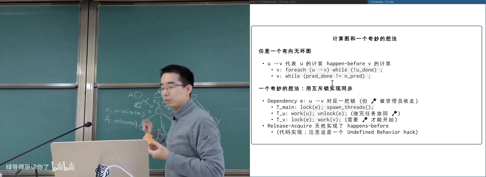
钥匙在桌上：跨线程交接在 B 站打开 (00:08:00)
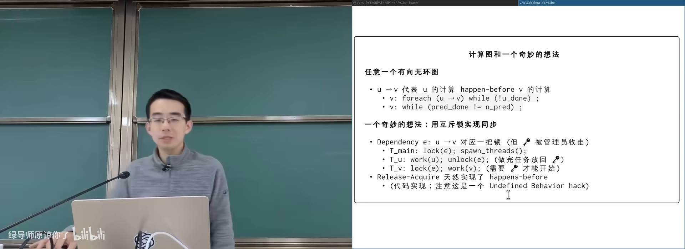
计算图：边依赖与完成事件在 B 站打开 (00:03:40)
图：可关注节点 X 等待多条入边完成。
flowchart LR
A["前驱节点完成"] --> V["V: 往桌上放钥匙"]
V --> P["后继节点 P: 拿走钥匙"]
P --> B["后继开始计算"]
2. 发明信号量
(参考时间: 00:14:00)
把互斥锁的「一把钥匙」推广为「若干份许可」：
- P（acquire / down / wait）：许可数 >0 则取走一份并继续，否则睡眠等待；
- V（release / up / signal）：放回一份许可，并可能唤醒等待者。
生活对应：
| 场景 | 许可 |
|---|---|
| 停车场 | 余位（闸门处计数） |
| 游泳馆 | 手环数量 |
| 餐厅 | 空桌数 |
Dijkstra 提出的 信号量（semaphore，带计数的同步原语，用 P/V 操作增减许可）正是这一模型。P 是 try-and-decrease，V 是 increase/post。
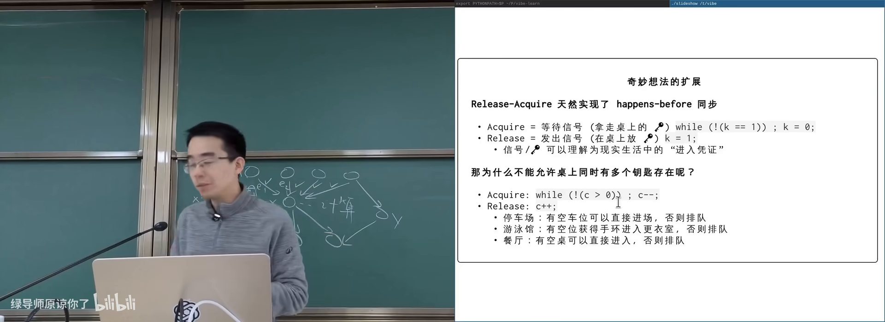
停车场余位 = 信号量计数在 B 站打开 (00:16:00)
图：可关注「只管入口配额，不管场内如何停车」。
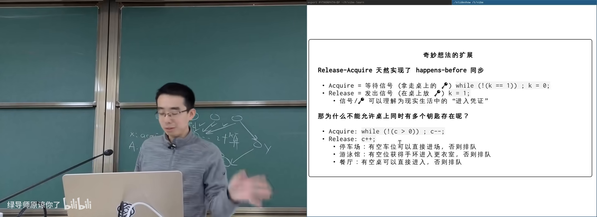
游泳馆手环 / 餐厅取号在 B 站打开 (00:14:30)
图：可关注许可发放与归还。
2.1 计数如何工作
初始 count=4 时，前四个 P 依次看到 4→3→2→1 并返回；第五个 P 在 count=0 时阻塞。任一线程 V 后 count 上升，等待者可被唤醒继续；全部归还后 count 回到 4。
实现上仍可是条件变量 + 互斥 + count（万能模板），但 API 语义是计数许可。
2.2 信号量只管入口
P 返回仅保证「至少还有一份许可被你占用」；缓冲区里具体选哪一格，仍要数据结构内部自己加锁协调。违规 V 两次会「凭空多出车位」，破坏互斥。
3. 信号量 vs 条件变量
(参考时间: 00:22:00)
count=1 的信号量就是互斥锁——互斥是信号量的特例，信号量是互斥的扩展。
| 条件变量 | 信号量 | |
|---|---|---|
| 心智模型 | 写出逻辑条件 cond | 想清楚谁放钥匙、谁取钥匙 |
| 计数资源 | 要自己写 count+cond | 天生支持 |
| 跨线程交接 | 靠共享状态+broadcast | V 与 P 天然跨线程 |
3.1 用信号量实现 join
两种等价写法：
- 每线程一张桌子：各自初始化 count=0；线程结束 V；main 对每个线程各 P 一次；
- 一张桌子：全局 count=0；每个线程结束都 V；main 已知线程数则 P 相应次数。
sem_t done; // init 0
// worker 结束时: sem_post(&done);
// main: for (i=0;i<n;i++) sem_wait(&done);
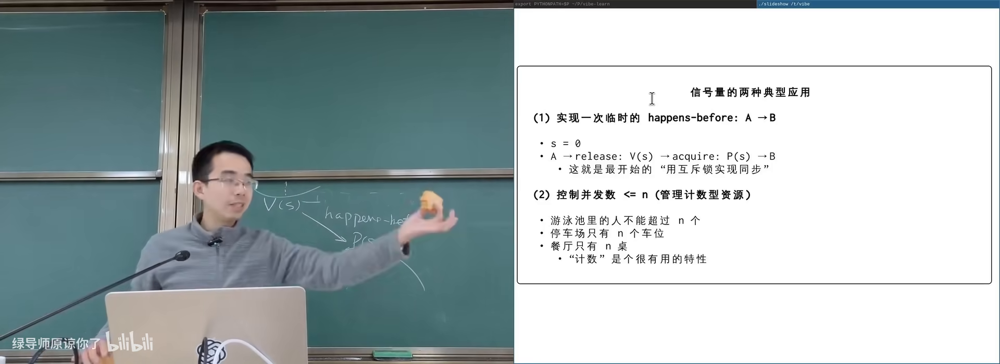
信号量实现 join在 B 站打开 (00:27:00)
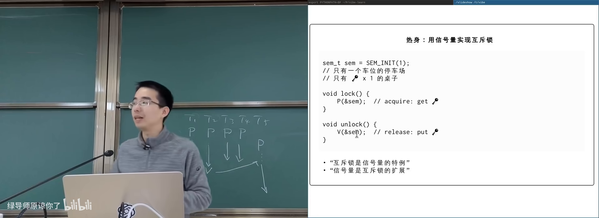
count=1 时信号量即互斥锁在 B 站打开 (00:23:30)
图：可关注只有一个车位的停车场。
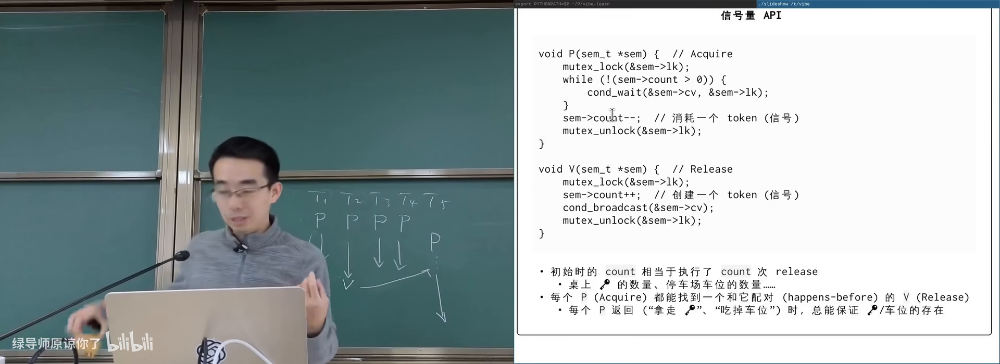
条件变量实现的信号量：while count<=0 wait在 B 站打开 (00:22:00)
图：可关注 P/V 与万能模板的对应。
3.2 计算图
- 边上信号量：每条依赖一个 count=0 的桌子；后继对每个入边 P，前驱对每条出边 V；
- 节点上信号量：节点 count=0；执行前按入度 P 次，结束后对每个后继 V。
运行顺序与条件变量版一致（0，然后 1/2/3 并行，最后 complete）。
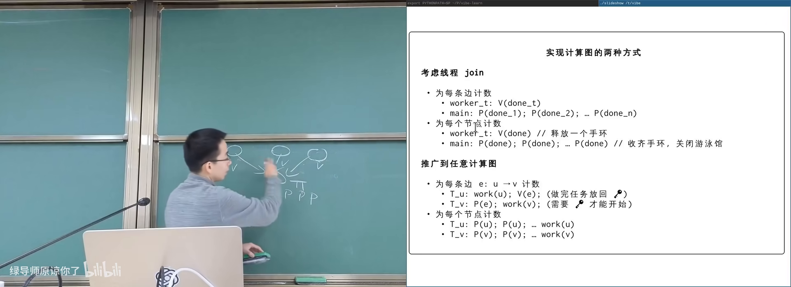
DAG：节点信号量在 B 站打开 (00:32:00)
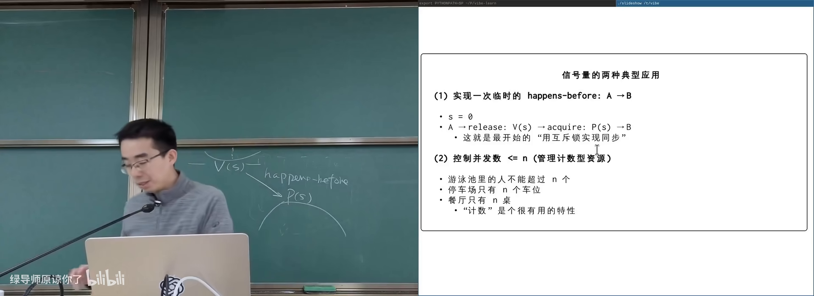
边上信号量：每条依赖一张桌子在 B 站打开 (00:29:00)
图：可关注前驱 V 出边、后继 P 入边。
4. 生产者–消费者：empty 与 full
(参考时间: 00:34:00)
两个信号量表达极为对称的模型：
empty：缓冲区空槽数量（初始 = capacity）；full：已填充数量（初始 = 0）。
Producer: Consumer:
P(empty) P(full)
/* 生产，写入 buffer */ /* 消费，读出 buffer */
V(full) V(empty)
加上保护 buffer 本身的互斥锁即可。含义：
empty桌上的每个小球 = 一个空槽；full桌上的每个小球 = 一个可消费数据项；- 生产 = 从 empty 拿走许可，做完事后放到 full；
- 消费 = 从 full 拿走许可，处理完后把空槽还给 empty。
全局不变式：empty + full +（已拿走许可尚未完成交接的中间态）与容量相关；正确配对下缓冲不会越界。
课程用打印左/右括号演示：生产者打印 ( 对应 V(full) 一类交接，消费者打印 )，嵌套深度由容量约束。
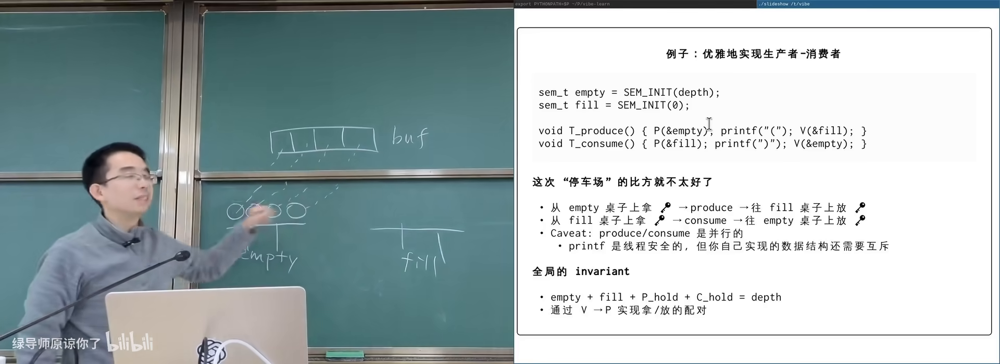
empty/full 双桌模型在 B 站打开 (00:36:30)
图：可关注两桌小球此消彼长。
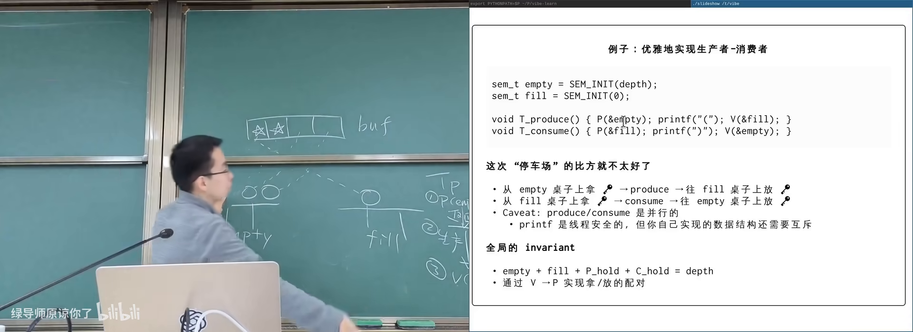
打印左右括号的 P/V 交接在 B 站打开 (00:40:00)
图：可关注 producer 从 empty 拿许可、consumer 还 empty。
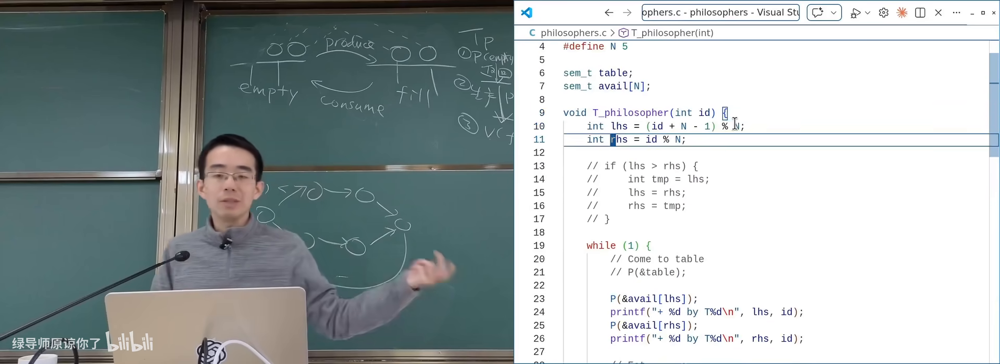
信号量 vs 条件变量选用在 B 站打开 (00:50:00)
图：可关注计数资源 vs 逻辑条件两种心智模型。
4.1 何时用谁
- 问题本质是条件表达式 → 条件变量更直接、可 assert；
- 问题本质是计数资源 / 事件计数 / 任务交接 → 信号量往往更短、更不容易漏条件。
两者都建立 happens-before，都可实现几乎全部同步问题。
附录：概念补给
信号量（semaphore）
- 是什么：带非负计数的同步原语；P 减、V 加，P 在零时等待。
- 课上为何出现：跨线程传递许可，覆盖计数型同步。
- 和什么像：停车场余位计数器 + 闸门。
P / V 操作
- 是什么：信号量上等待并减一 / 增加并可能唤醒。
- 课上为何出现：Dijkstra 命名的荷兰语词源 API。
- 常见误解：P/V 不是「生产/消费」，而是 down/up。
互斥锁是信号量特例
- 是什么：count 初始为 1 的信号量。
- 课上为何出现：统一两套工具的语义。
- 和什么像：只有一个车位的停车场 = 一次只能进一辆车。
empty / full 信号量
- 是什么：生产者消费者中分别表示空槽数与已填数。
- 课上为何出现：标准双信号量解法。
- 和什么像：空碗数与已盛汤碗数。
许可 / token / 钥匙
- 是什么：信号量计数的物理直觉对象。
- 课上为何出现：避免一上来就陷入公式。
- 和什么像：演唱会手环：有环才能进场。
happens-before（经信号量）
- 是什么：V 之前的操作先于对应 P 之后的操作。
- 课上为何出现：信号量实现 join/计算图的正确性根据。
- 和什么像：交接班签字：上一班事项算在下一班开工前完成。
未定义行为（跨线程 unlock 互斥锁）
- 是什么：标准/实现不保证的用法。
- 课上为何出现：说明为何需要信号量而非裸锁交接。
- 常见误解：看起来逻辑对，不代表库实现支持。
scheduler–worker / 生产者消费者别名
- 是什么：同一主从任务分发模型的不同称呼。
- 课上为何出现：API 与现实系统结构对应。
- 和什么像：老师发卷子，学生做题交卷。
书架 Shelf 流水线生成 · 内容衍生自 B 站公开课程视频 BV1yQogB2Esf